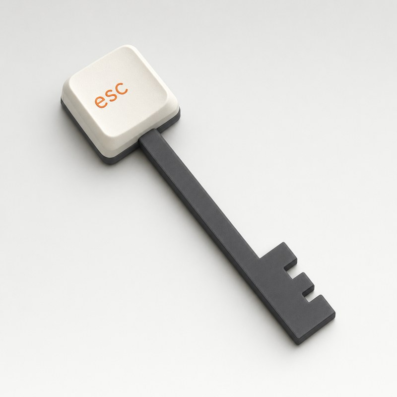
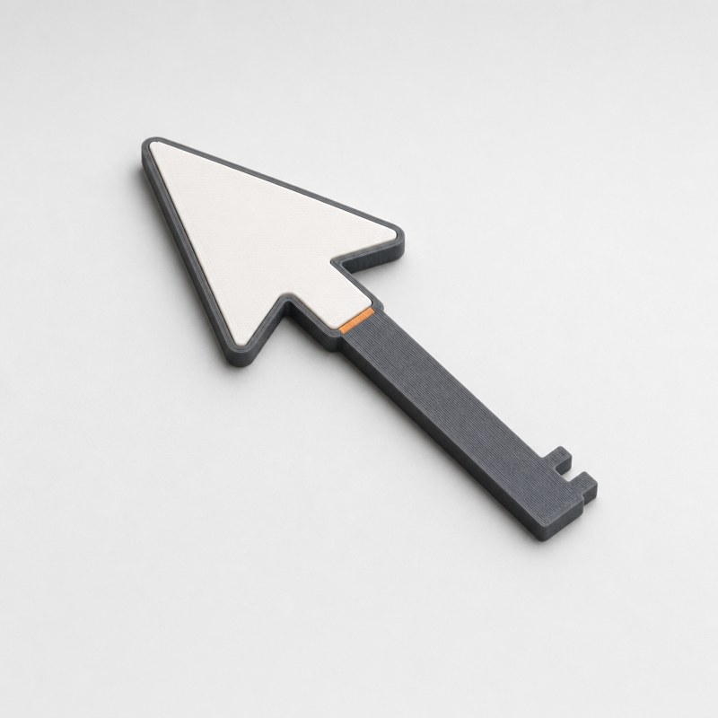
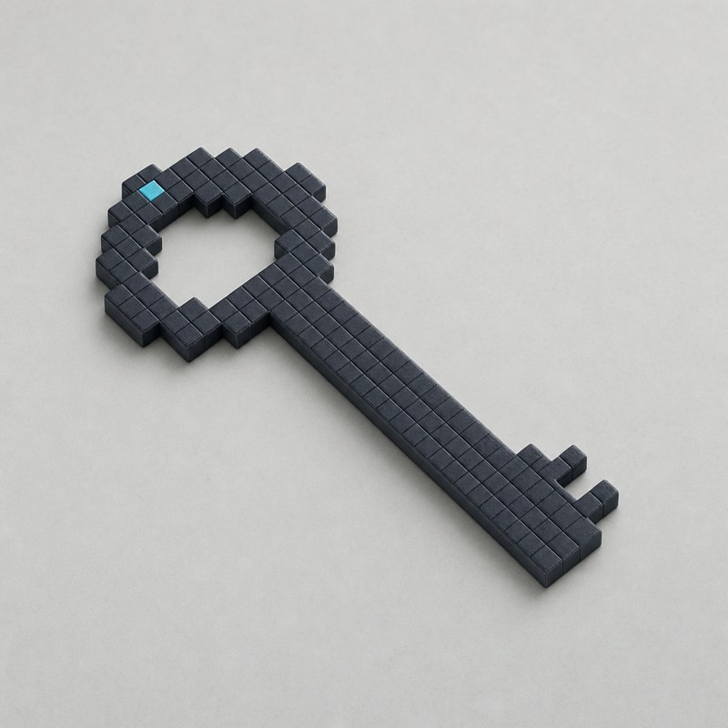
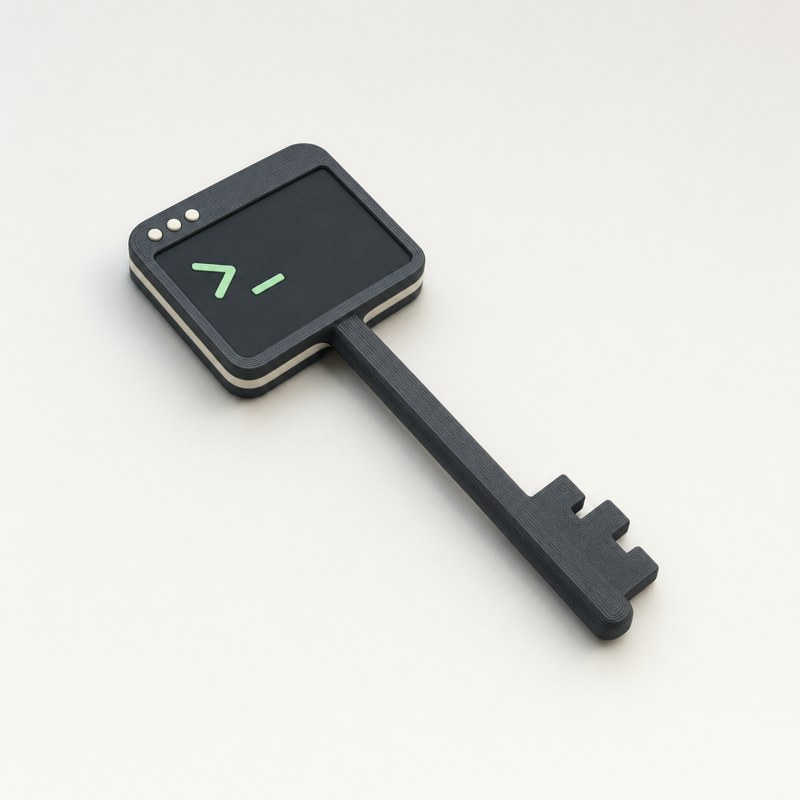
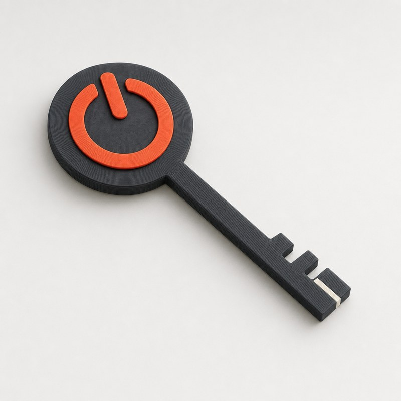
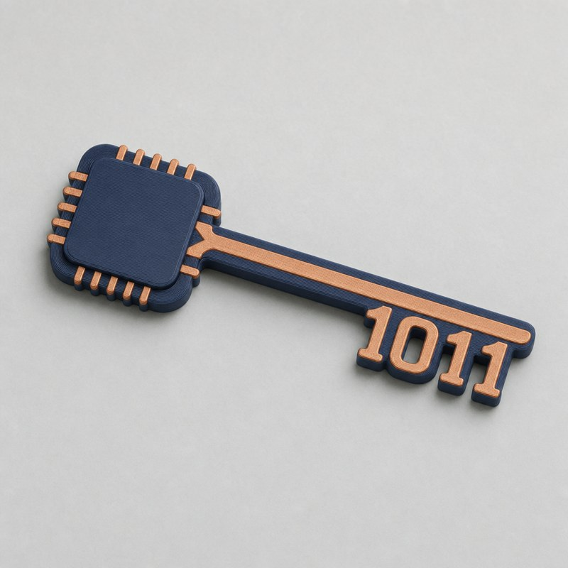
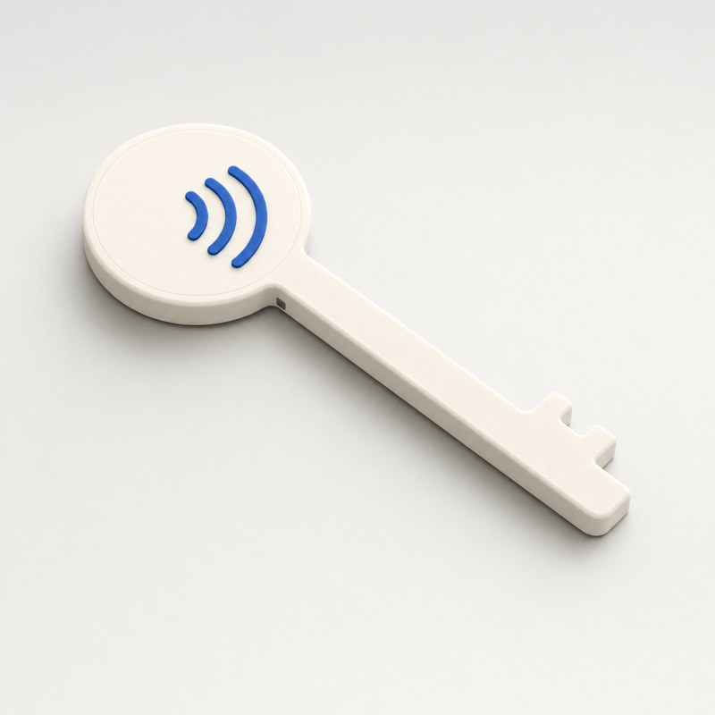
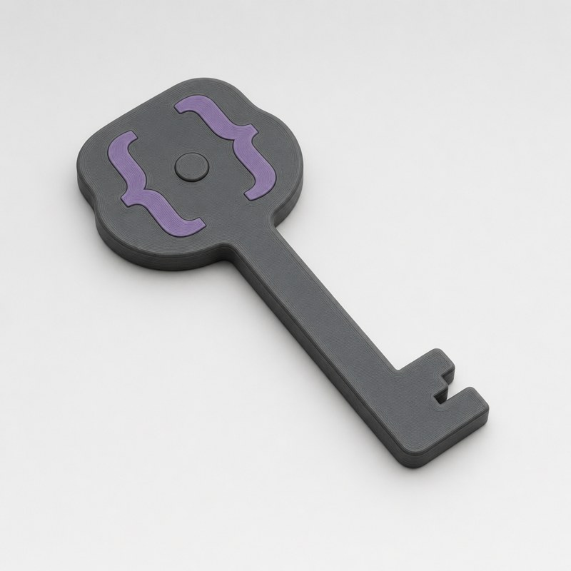

Round 3 looked like a children's toy. This round is a premium desk object a software company would give its team: graphite, navy and off-white, each with one accent colour. There are no faces; the charm comes from soft proportions and one playful detail.

Bow is a keyboard keycap marked esc. Tap Esc to escape the scroll. The drawn keycap is tall; the print would keep it low.
Tap: the keycap.

Bow is a chunky mouse pointer. Point and tap. A clean outline that reads from across a desk.
Tap: the arrow.

The whole key is 8-bit pixel art. Retro and playful. The drawn bow is hollow; the print would fill it to make the tap spot.
Tap: the pixel bow.

_ prompt">Bow is a tiny terminal window with a >_ prompt. Made for engineers. The prompt marks where to tap.
Tap: the window.

Bow is the power symbol on a disc. Switch off. The clearest message in the set, in graphite and red-orange.
Tap: the power ring.

Microchip bow, circuit-trace shaft, 1011 teeth. The teeth are binary digits. The most cybersecurity-looking option, in navy and copper.
Tap: the chip.

Bow carries the contactless wave symbol. Shows exactly how to use it: tap your phone here.
Tap: the waves.

Bow is a pair of { } braces around a dot. Quiet and minimal, for developers.
Tap: the braces.